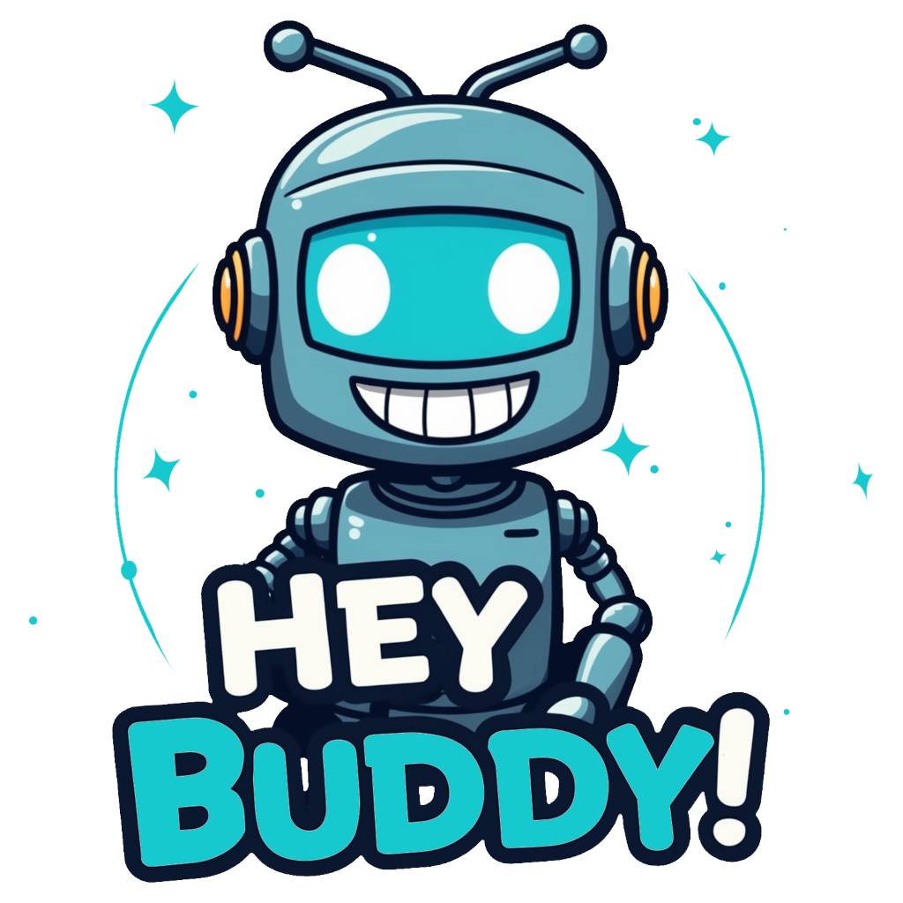

Hey Buddy! is a library for training wake word models (a.k.a audio keyword spotters) and deploying them to the browser for real-time use on CPU or GPU.
Using a wake-word as a gating mechanism for voice-enabled web applications carries numerous benefits, including reduced power consumption, improved privacy, and enhanced performance in noisy environments over speech-to-text systems.
This space serves as a demonstration of the JavaScript library for front-end applications. Say something like, “Hey buddy, how are you?” to see the wake word and voice activity detection in action. Your voice command will be isolated as an audio clip, which is then ready to be sent to your application's backend for further processing.


No recording yet